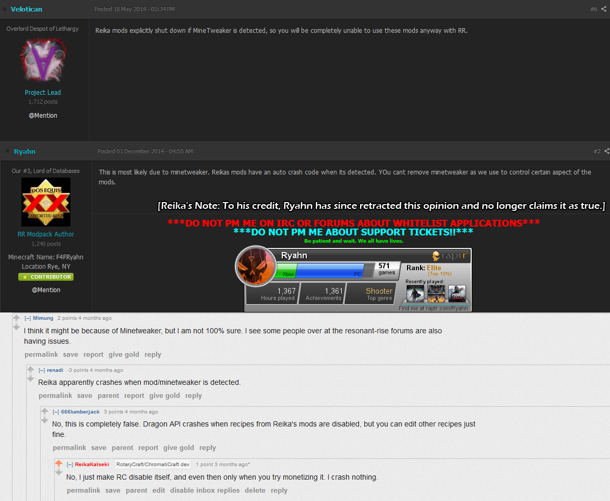
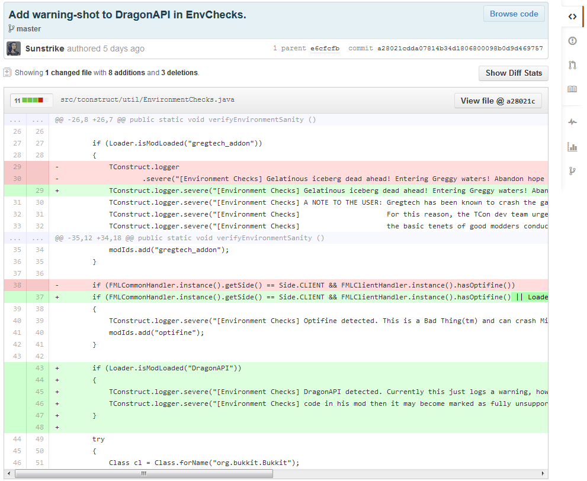

Preface
Many, many rumors and falsehoods are circulating about the stance I take on third-party modifications. Common (blatantly false) claims are that you cannot install Minetweaker in the same pack as RotaryCraft, or that it I will crash the game if I detect it.
 High-level managers of the Resonant Rise pack spreading this rumor.
Also common are claims that I disallow modifications because of a "do things my way" attitude, not for any legitimate reasons.
Another less-common claim is that I do not even permit changing of my configs, something that is simply false.
Special Permissions
A commonly proposed solution to the above problems is to adopt a policy of allowing certain sanctioned modifications, ones that I would screen beforehand to ensure they are reasonable so that modpack authors could make reasonable changes. In a perfect world, this would be a good idea.
Unfortunately, as it happens, I tried this. And it blew up in my face.
One, many pack creators took it very negatively. A great many painted the new exceptions as my stepping even further on their toes, portraying it as "we used to be able to do as we pleased, but now we are being forced to ask him", when that was simply false. The more unscrupulous ones even took it as an opportunity to claim I was targeting specific packs and authors for alleged personal reasons. One even accused me of bribery.
Two, even worse was how many mod developers reacted. Many openly stated that I had no right to choose who can and cannot make modifications, with several claiming I was playing favorites, and more than one claiming I was implementing DRM code in my mods. Several smeared me on places like reddit and twitter - the effects of which still persist in the form of rumors and some nasty opinions a year later - and a couple of mods put code in their mod to warn players and threaten me with further actions.
 A commit from Tinker's Construct soon after I tried this.
[2013-11-21 17:47:02] [SEVERE] [TConstruct] [Environment Checks] DragonAPI detected. Currently this just logs a warning, however if Reika continues his plan to implement DRM-like
[2013-11-21 17:47:02] [SEVERE] [TConstruct] [Environment Checks] code in his mod then it may become marked as fully unsupported. This is just a warning at this stage.
Because of the fact that many people - including players, pack makers, and mod developers - conflated giving permission for certain reasonable edits with giving certain people blanket permission and denying others, and because of how they reacted, I am not willing to implement such a policy, as I am reasonably certain its only outcome will be further suffering on my part.